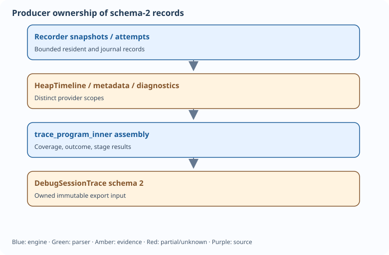
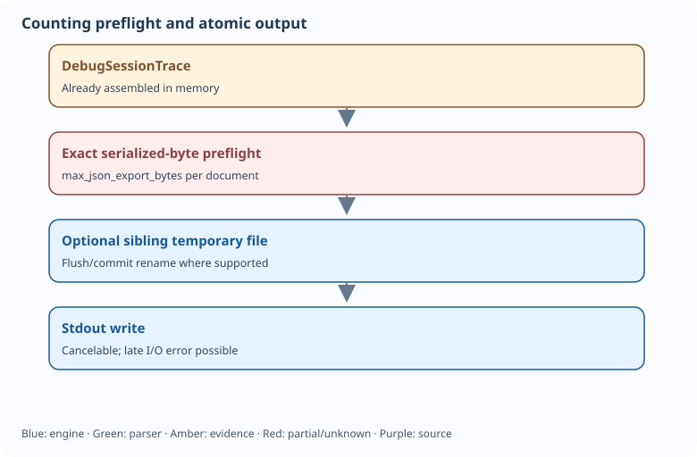

35 · Trace model, validation, journal, and JSON export #
Key terms #
| Term | Plain meaning |
|---|---|
| JSONL journal | One JSON object per line written while the program is observed; it can preserve a prefix of events. |
| Preflight | A size check before committing the final JSON file, so an oversized export is rejected before replacing an existing file. |
>
The big picture #
The engine constructs an owned schema-v2 DebugSessionTrace during collection. Structural validation, append-only JSONL recovery, and final JSON export are separate operations with separate budgets and failure semantics. The journal cannot reconstruct every final report; the final JSON is what the schema reference and downstream consumer load.
src/models.rs: owned trace and evidence domains #
Principal types: DebugSessionTrace (src/models.rs:499-540), RecordingData (src/models.rs:734-755), ExecutionSnapshot (src/models.rs:65-94), InstructionEvent (src/models.rs:698-723), HeapEvent (src/models.rs:248-285), HeapHistoryCoverage (src/models.rs:757-782), ExecutionOutcome and ProgramOutcome (src/models.rs:925-950). DebugSessionTrace owns vectors of snapshots, heap events and final heap state, status, reports, notes, effective configuration/limits, and independent StageResults; recording is #[serde(flatten)], so its instruction/disassembly/checkpoint/coverage/storage fields serialize at top level rather than as a nested JSON object (src/models.rs:501-539). Its Default constructs schema_version: 2, empty evidence and ExecutionFailure, not a successful trace (src/models.rs:897-923). trace_program_inner initializes this value with effective tracing configuration and limits, later fills compilation status and early-returns a CompileFailed trace with no synthetic snapshots when GCC rejects input (src/trace.rs:196-200,291-350). A status enum is a recorded outcome, not validation of absent observations.
pub struct DebugSessionTrace {
#[serde(default, flatten)]
pub recording: RecordingData,
pub schema_version: u32,
pub snapshots: Vec<ExecutionSnapshot>,
pub heap_events: Vec<HeapEvent>,
pub execution_status: ExecutionStatus,
pub stage_results: StageResults,
// Additional reports, configuration and evidence fields in src/models.rs:501-540.
}This is a field projection, not a compilable redefinition. source_checkpoints are indices into the snapshots vector, instruction_count counts attempted events even when instruction events are not retained, and event_id differs from a disassembly instruction_id (src/models.rs:699-755). VariableInfo.address is pointer storage whereas points_to is its target; PointerTarget.address_match_allocation_id is a numeric address candidate, not allocation origin (src/models.rs:118-186,605-633). HeapHistoryCoverage.complete applies to verified observed event PIDs plus the followed inferior, not all forked descendants (src/models.rs:757-781). ScopeStatus::Active and readable bytes do not prove initialization (src/models.rs:579-603). Optional static registry/source links never prove an expression executed. schema_tests::legacy_trace_deserializes_as_schema_v2_with_unstarted_stages exercises defaults for old optional fields (src/models.rs:952-985); the final audit qualifies the supported historical corpus, not all older files.
src/processor.rs: structural check only #
Signature: pub fn validate(trace: &DebugSessionTrace) -> Result<(), String> (src/processor.rs:6-43). It borrows the trace without rewriting events or simulating registers. For each resident instruction event it requires event_id == vector position; when instruction_id exists it indexes disassembly_table and checks the stored address matches; it bounds any checkpoint_id against snapshots. If events are nonempty it compares their length with instruction_count, then checks every source_checkpoints index exists and its snapshot's instruction_position does not exceed the count (src/processor.rs:7-41).
if !data.instruction_events.is_empty()
&& data.instruction_count != data.instruction_events.len() as u64
{
return Err("instruction count mismatch".into());
}
for id in &data.source_checkpoints {
let checkpoint = trace.snapshots.get(*id).ok_or("invalid source checkpoint")?;
if checkpoint.observation.instruction_position > data.instruction_count {
return Err("checkpoint beyond timeline".into());
}
}This excerpt is src/processor.rs:28-41. In journal-only mode an empty resident event array is not itself a mismatch. Passing this limited check does not prove heap provenance, execution completeness, or every semantic reference's integrity; use the parser validation guide for imported semantic evidence. The unit broken_reference_and_duplicate_event_id_are_rejected tests noncontiguous IDs and invalid disassembly references (src/processor.rs:45-76).
src/storage.rs: ordered JSONL, not final JSON #
Principal type/signatures: Journal { file: Option<File>, bytes: u64, cap: usize }; Journal::new(path: Option<&Path>, cap: usize) -> Result<Self>; append(&mut self, kind: &str, value: &impl Serialize) -> Result<usize>; finalize(&mut self) -> Result<()>; and recover(path: &Path) -> Result<impl Iterator<Item = Result<serde_json::Value>>> (src/storage.rs:8-70). A path is opened with create_new, so it never overwrites an existing journal; None still counts serialized bytes against the cap. append wraps a value as {"kind": ..., "data": ...}, serializes a complete newline-terminated record, checks max_trace_bytes before writing, and increments bytes after write_all (src/storage.rs:25-43). finalize appends a finalized footer outside the data cap and calls sync_data; the footer denotes journal closure, not completed execution. A write failure can still leave a partial last line, and no sync_data occurs on each append (src/storage.rs:44-51).
recover incrementally reads with a 16 MiB per-read bound, ignores a final line without newline, and yields per-record JSON or I/O errors; it does not reconstruct a full DebugSessionTrace from a partial journal (src/storage.rs:54-70). Tests bounded_and_no_overwrite and torn_last_record_is_recoverable_and_existing_file_is_not_overwritten cover the cap, create-new behavior, and incomplete-last-line handling (src/storage.rs:72-97). The V2 contract describes journal-only capture and retained-record accounting; storage.finalized is not a coverage flag.
src/json_export.rs: count first, commit file, then stdout #
Principal signatures: preflight<T: Serialize>(trace: &T, pretty: bool, limit: usize) -> io::Result<usize> (src/json_export.rs:72-76); export_json<T: Serialize, W: Write>(trace: &T, pretty: bool, limit: usize, file: Option<&Path>, stdout: &mut W) -> io::Result<usize> and its cancellation-aware form export_json_cancellable<T: Serialize, W: Write>(trace: &T, pretty: bool, limit: usize, file: Option<&Path>, stdout: &mut W, cancel: Option<&AtomicBool>) -> io::Result<usize> (src/json_export.rs:139-168). serialize_limited streams serde JSON to a BoundedWriter, counts actual UTF-8 output including pretty whitespace and final newline, checks the byte budget on writes, and optionally checks cancellation (src/json_export.rs:9-70). preflight uses io::sink() so it counts without allocating a full JSON string or touching either destination. It does not cap the already assembled trace in memory.
let bytes = serialize_limited(trace, pretty, limit, io::sink(), cancel)?;
if let Some(path) = file {
write_file_atomic(trace, pretty, limit, path, cancel)?;
}
serialize_limited(trace, pretty, limit, stdout, cancel)?;
Ok(bytes)This is the actual ordering at src/json_export.rs:162-168. For a file, create_sibling makes a unique same-directory create_new temp file (up to 16 names), serialization writes through a BufWriter, flushes and sync_alls the file, checks cancellation, then renames over the target (src/json_export.rs:78-137). TempPath::drop removes an uncommitted temp on failure; an existing target is preserved on preflight/temporary-write failure. The rename commits the file before stdout starts; stdout I/O or cancellation after that point cannot roll back the committed file, and stdout itself can be partially written on I/O error. Repeated serialization assumes stable trace contents: a custom stateful Serialize implementation could change between preflight and destinations, so preflight is not a transaction over arbitrary mutable serializers. The CLI maps export errors to exit 1 (src/main.rs:50-77). Tests cover exact pretty/compact limits and UTF-8, legacy round-trip, preserving the existing file on one-byte excess or serialization error, broken stdout pipe with valid committed file, disk-full stdout, cancellation before rename, and unwritable file preventing stdout (src/json_export.rs:170-413).
The final audit confirms an 8,192-byte JSON export limit rejected a larger trace before emitting JSON; that result says nothing about trace-construction RAM or general stdout atomicity.
Diagram notes #
Producer-side ownership #


Provider-owned records converge in one schema-2 DebugSessionTrace before export.
JSON export ordering #


Counting preflight rejects oversized output before file commit; committed file output cannot be rolled back by a later stdout error.